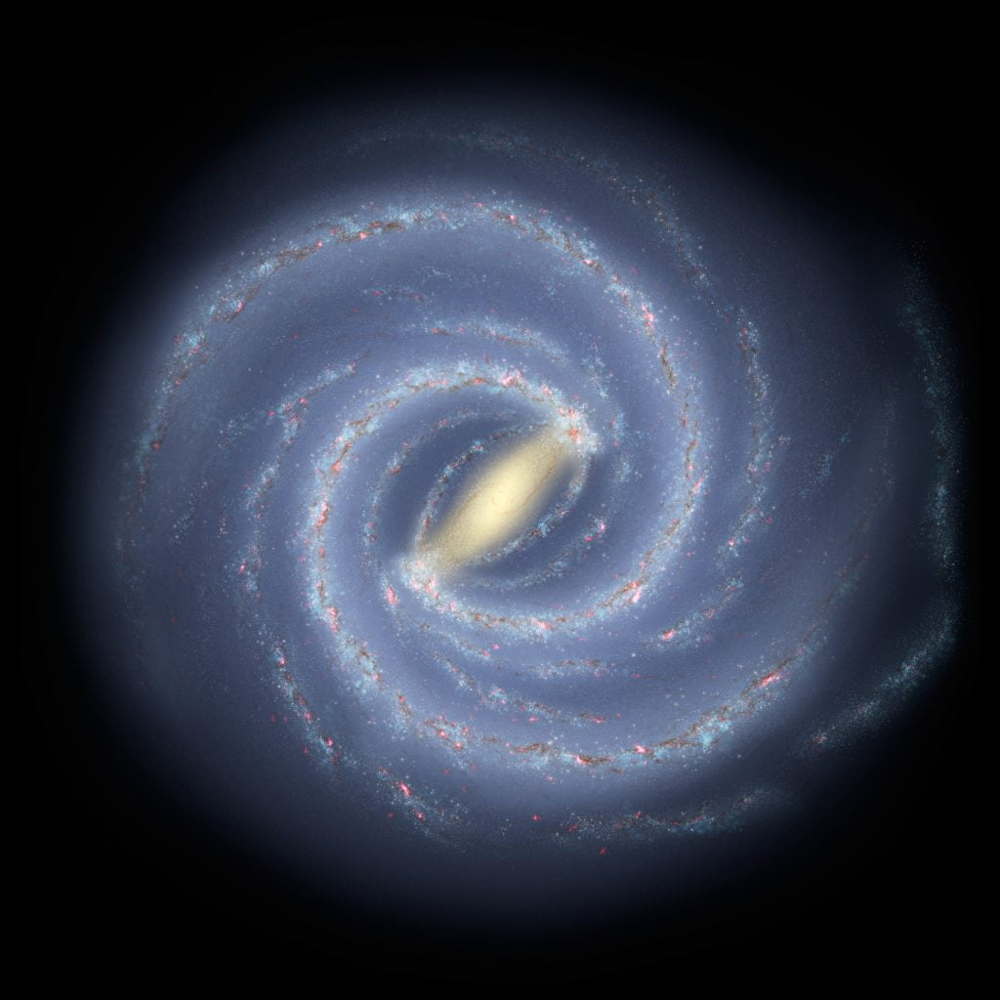
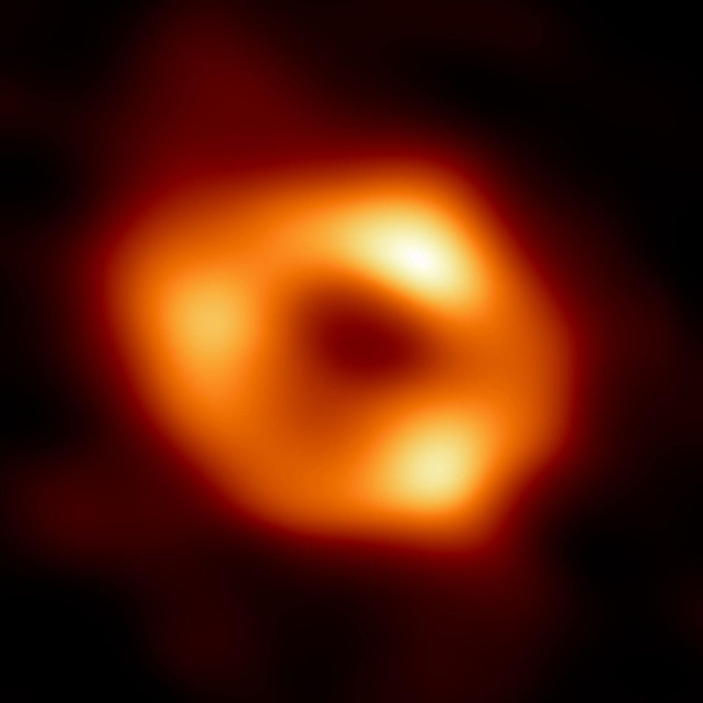

Milky Way ဟာဂလက်ဆီမှန်း ဘယ်တော့မှ သိကြသလဲ
မစ်ကီးဝေးဟာ တကယ်တော့ ဂလက်ဆီ တစ်ခု ဖြစ်ပါတယ်။ ဂလက်ဆီ ဆိုတာက ကြယ်တွေ စုနေတဲ့ ကြယ်စုကြီး ဖြစ်ပါတယ်။ ဒါပေမယ့် ဒီ ကြယ်စုဟာ ကြယ်အလုံးရေ ရာဂဏန်းလောက်နဲ့ ဖွဲ့စည်းထားတာ မဟုတ်ပါဘူး။ ဂလက်ဆီ တွေဟာ ကြယ်အလုံးရေ ဘီလီယံ ရာနဲ့ချီ ပါဝင် ဖွဲ့စည်း ထားကြတာ ဖြစ်ပါတယ်။ရှေးခေတ်က မစ်ကီးဝေး သည် ဂလက်ဆီ တစ်ခု ဆိုတာကို မသိခဲ့ ကြပါဘူး။ ဂရိ တွေးခေါ် ပညာရှင် အရစ္စတိုတယ်လ် က မစ်ကီးဝေး ဆိုတာ ကောင်းကင်နဲ့ မြေကြီး ဆုံရာ နယ်စည်း ဖြစ်တယ်လို့ ဆိုခဲ့ပါတယ်။ သူ့ အယူအဆ ကိုပဲ ရှေးဂရိ ခေတ်က စလို့ အလယ်ခေတ် တောက်လျှောက်ထိ လက်ခံ ယုံကြည် ခဲ့ကြပါတယ်။
မစ်ကီးဝေးသည် ကြယ်တွေနဲ့ ဖွဲ့စည်း ထားတယ် ဆိုတာက စတင် တင်ပြခဲ့ကြတဲ့ သူတွေကတော့ အာရပ် နက္ခတ် ပညာရှင် တွေပဲ ဖြစ်ကြပါတယ်။ သူတို့က မစ်ကီးဝေးဟာ တကယ်တော့မြောက်များလှ စွာသော ကြယ်တွေနဲ့ စုဖွဲ့ထားတဲ့ ကြယ်အစုအဝေးကြီး ဖြစ်တယ် ဆိုတဲ့ အယူအဆကို စတင် တင်ပြခဲ့ ကြပါတယ်။ ဒါပေမယ့် ဒီ သီအိုရီကို သက်သေပြဖို့ နက္ခတ်ကြည့် မှန်ပြောင်းတွေ မရှိသေးတဲ့ အတွက်ကြောင့် အရစ္စတိုတယ်လ် ရဲ့ အယူအဆကို ပယ်ရှားနိုင်ခဲ့ကြခြင်း မရှိခဲ့ပါဘူး။
ဒီအချက်ကို အခြေပြုပြီး ဟတ်ဘယ်လ်က ဒီ နက်ဗြူလာ တွေသည် မစ်ကီးဝေး လို ဂလက်ဆီ တွေ ဖြစ်ပြီး မစ်ကီးဝေးဟာ စကြဝဠာ ထဲက တခုတည်းသော ဂလက်ဆီ မဟတ်ဘူး ဆိုတာကို ဖော်ထုတ် နိုင်ခဲ့ပါတယ်။
Milky Way Galaxy ကဘာပုံလဲမစ်ကီးဝေး ဂလက်ဆီဟာ ဓါတ်ပြားလို ပြားပြားကြီး ဖြစ်ပါတယ်။ ဒီ ဂလက်ဆီရဲ့ ပုံဟာ ခရုပတ်ခွေ နဲ့ ပိုတူ ပါတယ်။ ဂလက်ဆီ ပြားပြားကြီး ခရုပတ်လို လက်တံတွေ အများအပြား ဖြစ်ပေါ် နေတာကို တွေ့ကြရမှာ ဖြစ်ပါတယ်။
မစ်ကီးဝေး ထဲမှာ ကြယ်အလုံးပေါင်း ဘီလီယံ ၁၀၀ ကနေ ၄၀၀ လောက်ထိ ရှိမယ်လို့ ပညာရှင် တွေက ယူဆ ကြပါတယ်။ အရွယ်အစား အားဖြင့် အချင်း အလင်းနှစ် ၈၇,၄၀၀ လောက် ရှိမယ်လို့ ခန့်မှန်းပါတယ်။ ဆိုလိုတာက မစ်ကီးဝေးရဲ့ တဖက်ခြမ်းက အလင်းဟာ အခြား တဖက်ခြမ်းကို ရောက်ဖို့ အချိန် နှစ်ပေါင်း ၈၇,၄၀၀ ကြာမှာ ဖြစ်ပါတယ်။

ဒီ ပုံမှာ အလယ် ဗဟိုမှာ လင်းနေတဲ့ နေရာက ကြယ်တွေ ပြွတ်သိပ်ပြီး စုနေလို့ လင်းထိန်နေအောင် မြင်ရတာ ဖြစ်ပါတယ်။ ခရုပတ်ပုံ ဂလက်ဆီ ဆိုတဲ့အတိုင်း လှပတဲ့ ခရုပတ်ပုံ လက်တံ အခွေတွေ အများအပြားကို တွေ့ရမှာ ဖြစ်ပါတယ်။ နက္ခတ် ပညာရှင် တွေရဲ့ ခန့်မှန်းချက် အရ မစ်ကီးဝေးမှာ ပင်မ ခရုပတ် လက်တံ ၄ ခု ရှိမယ်လို့ ယူဆ ကြပါတယ်။ ဒီ ပင်မ လက်တံတွေဟာ မစ်ကီးဝေးရဲ့ ဗဟိုကနေ စပြီး ခရုပတ်လို ခွေပြီး ဖြာထွက် သွားကြတာ ဖြစ်ပါတယ်။
ပင်မလက်တံ လိုပဲ အခြား လက်တံ အသေးလေး တွေလဲ အများအပြား ရှိမယ်လို့ ယူဆ ကြပါတယ်။
Milky Way ဂလက်ဆီကို ဘေးတိုက် ကြည့်မယ်ဆိုရင် အလယ်မှာ ဖေါင်နေတာကို တွေ့ကြရမှာ ဖစ်ပါတယ်။ ဒီနေရာဟာ ကြယ်တွေ အမြောက်အများ စုနေတဲ့ နေရာ ဖြစ်ပါတယ်။
နေက ဘယ်နားလောက်မှာ ရှိသလဲ
နေက မစ်ကီးဝေးရဲ့ ဗဟိုကနေ အလင်းနှစ် ၂၇,၀၀၀ ခန့် အကွာမှာ ရှိမယ်လို့ ယူဆ ကြပါတယ်။ နေဟာ မစ်ကီးဝေးရဲ့ ခရုပတ် ခွေကြီး တစ်ခုဖြစ်တဲ့ အိုရိုင်ယန် (Orion arm) ထဲမှာ တည်ရှိပါတယ်။နေဟာ မစ်ကီးဝေးရဲ့ ဗဟိုကို ဗဟိုပြုပြီး လှည့်ပတ် နေပါတယ်။ နေက မစ်ကီးဝေးကို တစ်ပတ် ပတ်မိဖို့ အချိန် နှစ် သန်း ၂၄၀ လောက် ကြာမယ်လို့ ယူဆရပါတယ်။
မစ်ကီးဝေးရဲ့ ဗဟိုမှာ ဘာရှိသလဲ
မစ်ကီးဝေးရဲ့ ဗဟိုမှာ အလွန် ကြီးမားတဲ့ Super massive black hole ကြီး တစ်ခု ရှိပါတယ်။ Sagittarius A* လို့ အမည်ပေး ထားတဲ့ ဒီ black hole ကြီးဟာ နေအစင်းပေါင်း ၄ သန်းခွဲ ခန့်နဲ့ ညီမျှတဲ့ ဒြပ်ထု ရှိမယ်လို့ ယူဆ ကြပါတယ်။ ဒီ black hole တွင်းနက်ကြီးရဲ့ ဓါတ်ပုံကို တလောကပဲ အောင်မြင်စွာ ဓါတ်ပုံ ရိုက်ယူ နိုင်ခဲ့ပါတယ်။ဒီ Super massive black hole ကြီးရဲ့ အနီးက ကြယ်တွေဟာ ဒီ တွင်းနက်ကြီးကို ဗဟိုပြုပြီး လှည့်ပတ်နေကြပါတယ်။ ဒီလို လှည့်ပတ်နေကြတဲ့ ကြယ်တွေ အနက်က S2 လို့ အမည်ပေး ထားတဲ့ ကြယ်ဟာ အခုထိ ရှာဖွေ တွေ့ရှိခဲ့ပြီး သမျှထဲမှာ Sagittarius A* တွင်းနက်ကြီးနဲ့ အနီးဆုံး ကပ်ပြီး လှည့်ပတ်နေတဲ့ ကြယ်ဖြစ်ပါတယ်။
မစ်ကီးဝေးရဲ့ ဗဟိုက black hole တွင်းနက်ကြီးဟာ လောလောဆယ် မှာတောာ့ သူ့ပတ်ဝန်းကျင်က ဒြပ်ပစ္စည်း တွေကို စုပ်ယူ စားသောက်နေခြင်း မရှိပါဘူး။

Milky Way ဂလက်ဆီရဲ့ တိုင်းတာလို့ ရတဲ့ ဒြပ်ထုဟာ ဒြပ်ထု စုစုပေါင်းရဲ့ ၁၆ ရာနှုန်းပဲ ရှိပါတယ်။ မစ်ကီးဝေးရဲ့ ၈၄% ဟာ မမြင်နိုင်တဲ့ အမှောင်ဒြပ် (Dark Matter) တွေ ဖြစ်မယ်လို့ သိပ္ပံ ပညာရှင် တွေက ယုံကြည် ကြပါတယ်။
မစ်ကီးဝေးနဲ့ အနီးဆုံး ဂလက်ဆီ ကတော့ Andromeda Galaxy ဖြစ်ပါတယ်။ ဒီ Andromeda galaxy ဟာလဲ မစ်ကီးဝေး လိုပဲ ခရုပတ်ပုံ ဂလက်ဆီ ဖြစ်ပါတယ်။ Andromeda ဟာ မစ်ကီးဝေး ကနေ အလင်းနှစ် ၂ သန်း ခွဲလောက် အကွာမှာ ရှိပါတယ်။ သူ့ရဲ့ အချင်းဟာ အလင်းနှစ် ၂၀၀,၀၀၀ ခန့် ရှိတာမို့ အရွယ်အစား အားဖြင့်တော့ ကျွန်တော်တို့ မစ်ကီးဝေးထက် ပိုကြီးပါတယ်။
အန်ဒရို မီဒါ နဲ့ မစ်ကီးဝေး တို့ဟာ တခုနဲ့ တခု တဖြည်းဖြည်း နီးကပ်လို့ လာနေပြီး နောင်လာမယ့် နှစ်ပေါင်း သန်း ၄၀၀၀ ခန့်မှာ ဂလက်ဆီ တစ်ခုထဲ အဖြစ် ပေါင်းစည်း သွားမယ်လို့ သိရပါတယ်။